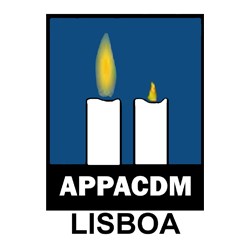
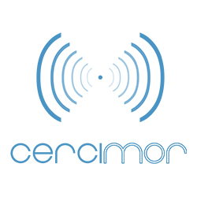
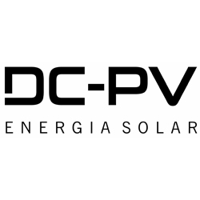

Temos para si alguns parceiros que o podem
ajudar.
- 
APPACDM
A APPACDM de Lisboa, Instituição Particular de Solidariedade Social, fundada em 1962... (clique em Info para saber mais)

Biovilla
Os nossos tarifários são justos, transparentes e 100% renováveis para particulares e empresas.
- 
Cercimor
Os nossos tarifários são justos, transparentes e 100% renováveis para particulares e empresas.
- 
DC-PV
Os nossos tarifários são justos, transparentes e 100% renováveis para particulares e empresas.

Lampo Ideias
Os nossos tarifários são justos, transparentes e 100% renováveis para particulares e empresas.

Minga
Os nossos tarifários são justos, transparentes e 100% renováveis para particulares e empresas.